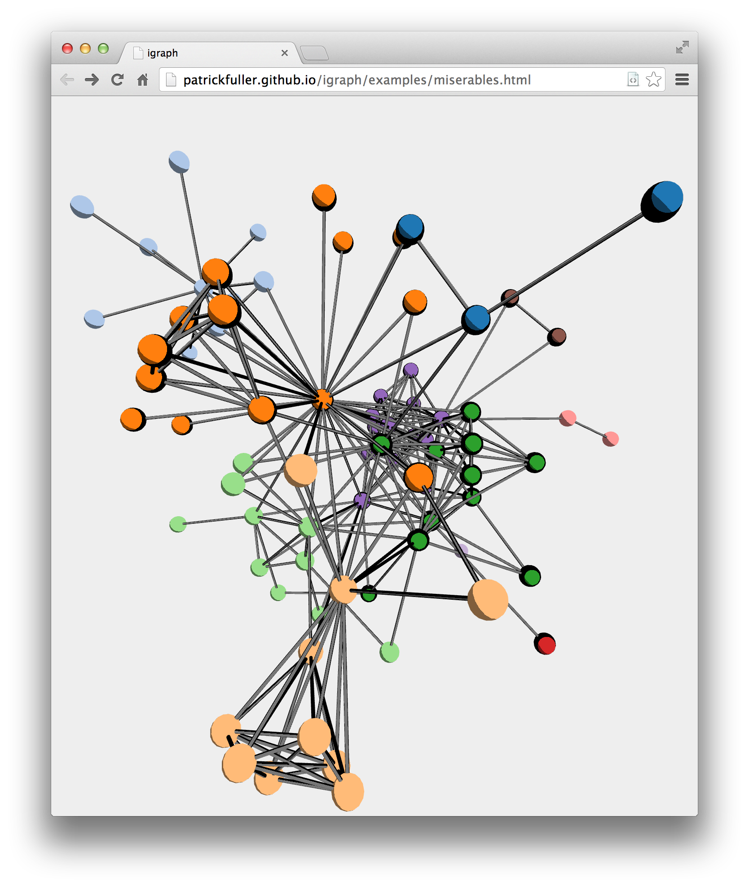

An embeddable webGL graph visualization library.

igraph.create('my-selector');
igraph.draw(myGraph);
where 'my-selector' is where you want to place igraph, and myGraph is a plain ol' object. See below for more on the object structure, or just check out the included examples. The igraph.create() method takes a few optional parameters, specifying the sizes and colors of nodes, as well as force-directed optimization.
options = {
directed: true, // Toggles edge arrows
nodeSize: 2.0, // Default node size
edgeSize: 0.25, // Edge connection diameter
arrowSize: 1.0, // If drawn, edge arrow size
defaultNodeColor: 0xaaaaaa, // Color for nodes without a "color" property
defaultEdgeColor: 0x777777, // Color for edges without a "color" property
shader: THREE.ShaderToon.toon2, // three.js shader algorithm to use
runOptimization: true // Runs a force-directed-layout algorithm on the graph
};
The viewers take input graph data structures as javascript objects. Here's the most boring graph in the world:
{
nodes: {
jane: { },
bob: { },
mike: { },
sally: { }
},
edges: [
{ source: "jane", target: "bob" },
{ source: "bob", target: "mike" },
{ source: "mike", target: "sally" }
]
}
Nodes require no information outside of their keys. However, there are useful optional parameters that can be specified.
{
color: 0xffffff, // Color for this node
size: 1.0, // Scaling factor for this node's size
location: [0.0, 0.0, 0.0] // Starting location of node. Useful for pre-rendering.
}
By default, the algorithm runs a force-directed layout on the graph. When enabled, the "location" field is optional. However, for larger graphs, you will want to disable this feature and pre-render the locations. Use the associated Python script to do so.
The IPython notebook is an open-source tool poised to replace MATLAB in many applications. As a scientist of sorts, I'm all about it. Therefore, I made handles to use igraph with the notebook.
Open a new notebook and make sure that the igraph directory is either in the directory you started the notebook or your PYTHONPATH. You can test the setup by typing:
import igraph
igraph.draw([(1, 2), (2, 3), (3, 4), (4, 1), (4, 5), (5, 2)])
into a notebook cell. You should get a paddlewheel graph as an output. You can use this in conjunction with other code for educational purposes (try generating a red-black tree!). There are three commands and some optional parameters to check out. Read the docstrings for more.